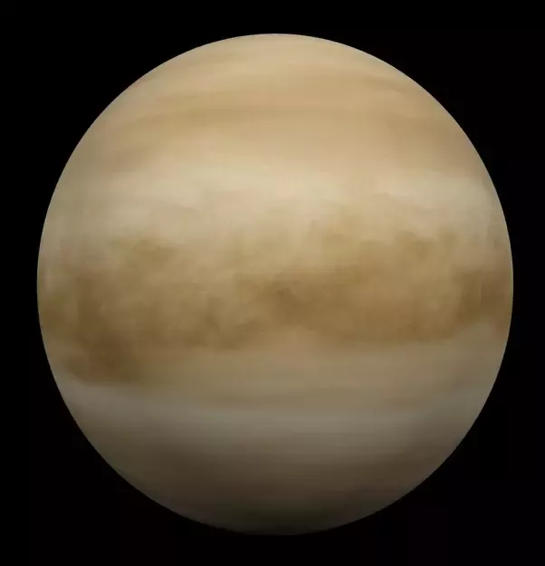
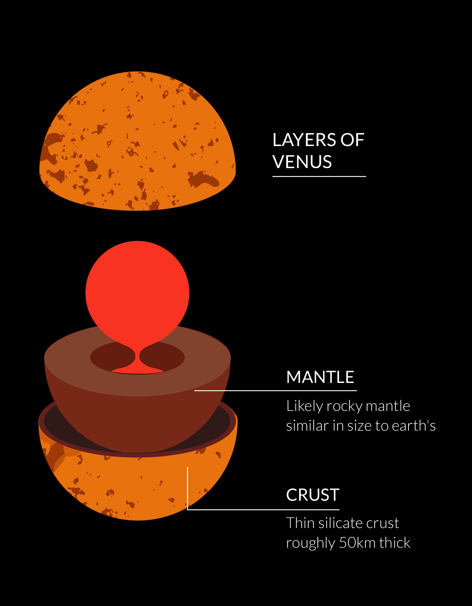

Venus is the second planet from the Sun and is Earth’s closest planetary neighbor
Introduction
It’s one of the four inner, terrestrial (or rocky) planets, and it’s often called Earth’s twin because it’s similar in size and density.
These are not identical twins, however – there are radical differences between the two worlds.
Potential for Life
Thirty miles up (about 50 kilometers), temperatures range from 86 to 158 Fahrenheit (30 to 70 Celsius), a range that, even at its higher-end,
could accommodate Earthly life, such as “extremophile” microbes. And atmospheric pressure at that height is similar to what we find on Earth’s
surface.
At the tops of Venus’ clouds, whipped around the planet by winds measured as high as 224 miles (360 kilometers) per hour, we find another
transformation. Persistent, dark streaks appear. Scientists are so far unable to explain why these streaks remain stubbornly intact, even amid
hurricane-force winds. They also have the odd habit of absorbing ultraviolet radiation.
The most likely explanations focus on fine particles, ice crystals, or even a chemical compound called iron chloride. Although it's much less likely,
another possibility considered by scientists who study astrobiology is that these streaks could be made up of microbial life, Venus-style.
Astrobiologists note that ring-shaped linkages of sulfur atoms, known to exist in Venus’ atmosphere, could provide microbes with a kind of coating
that would protect them from sulfuric acid. These handy chemical cloaks would also absorb potentially damaging ultraviolet light and re-radiate it
as visible light.
Some of the Russian Venera probes did, indeed, detect particles in Venus’ lower atmosphere about a micron in length – roughly the same size as a
bacterium on Earth.
None of these findings provide compelling evidence for the existence of life in Venus’ clouds. But the questions they raise, along with Venus’
vanished ocean, its violently volcanic surface, and its hellish history, make a compelling case for a return to our temperamental sister planet.
There is much, it would seem, that she can teach us.
Size and Distance
Our nearness to Venus is a matter of perspective. The planet is nearly as big around as Earth – 7,521 miles (12,104 kilometers) across,
versus 7,926 miles (12,756 kilometers) for Earth. From Earth, Venus is the brightest object in the night sky after our own Moon. The ancients,
therefore, gave it great importance in their cultures, even thinking it was two objects: a morning star and an evening star. That’s where the
trick of perspective comes in.
Because Venus’ orbit is closer to the Sun than ours, the two of them – from our viewpoint – never stray far from each other. The ancient Egyptians
and Greeks saw Venus in two guises: first in one orbital position (seen in the morning), then another (your “evening” Venus), just at different
times of the year.
At its nearest to Earth, Venus is some 38 million miles (about 61 million kilometers) distant. But most of the time the two planets are farther
apart; Mercury, the innermost planet, actually spends more time in Earth’s proximity than Venus.
Venus Moons
Venus has no moons.

Structure
If we could slice Venus and Earth in half, pole to pole, and place them side by side, they would look remarkably similar. Each planet has
an iron core enveloped by a hot-rock mantle; the thinnest of skins forms a rocky, exterior crust. On both planets, this thin skin changes form
and sometimes erupts into volcanoes in response to the ebb and flow of heat and pressure deep beneath.

Orbit and Rotation
Spending a day on Venus would be quite a disorienting experience – that is, if your ship or suit could protect you from temperatures in
the range of 900 degrees Fahrenheit (475 Celsius). For one thing, your “day” would be 243 Earth days long – longer even than a Venus year
(one trip around the Sun), which takes only 225 Earth days. For another, because of the planet's extremely slow rotation, sunrise to sunset
would take 117 Earth days. And by the way, the Sun would rise in the west and set in the east, because Venus spins backward compared to Earth.
While you’re waiting, don’t expect any seasonal relief from the unrelenting temperatures. On Earth, with its spin axis tilted by about 23 degrees,
we experience summer when our part of the planet (our hemisphere) receives the Sun’s rays more directly – a result of that tilt. In winter,
the tilt means the rays are less direct. No such luck on Venus: Its very slight tilt is only three degrees, which is too little to produce
noticeable seasons.